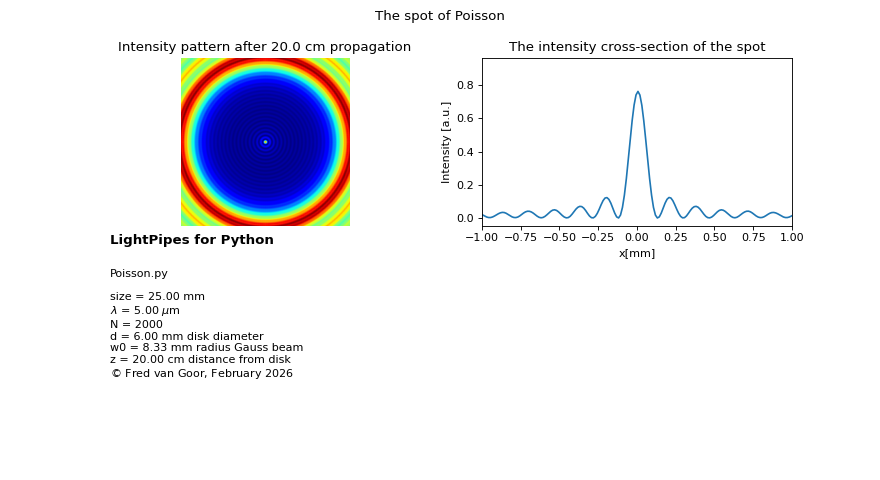

7.2.2. Poisson’s Spot
Poisson’s spot, also known as the Arago spot, is a classical demonstration of the wave nature of light. When a coherent beam illuminates an opaque circular disk, a bright point appears at the center of the geometric shadow. This phenomenon results from constructive interference of the secondary wavelets originating from the edge of the disk.
Historically, Poisson predicted the existence of this bright spot while evaluating Fresnel’s wave theory of light. He believed the prediction was absurd and used it as an argument against the wave theory. However, Arago performed the experiment and observed the spot exactly as predicted. The Poisson/Arago spot therefore became one of the earliest and strongest confirmations that light behaves as a wave.
This example demonstrates how to simulate Poisson’s spot using LightPipes.
7.2.2.1. What this example illustrates
Creation of a uniform plane wave.
Introduction of an opaque circular obstacle.
Fresnel propagation over a finite distance.
Calculation and visualization of the resulting intensity pattern.
Observation of the central bright spot characteristic of Poisson’s phenomenon.
7.2.2.2. Physical background
According to geometrical optics, the center of the shadow behind an opaque disk should be completely dark. Fresnel’s wave theory, however, predicts that every point on the edge of the disk acts as a secondary source. The contributions from these sources interfere constructively at the center of the shadow, producing a bright spot. The surrounding ring structure is caused by additional constructive and destructive interference of the diffracted wavefronts.
7.2.2.3. Code example
1 import numpy as np
2 from LightPipes import *
3 import matplotlib.pyplot as plt
4
5 # Parameters
6 wavelength=5*um
7 size=25.0*mm
8 N=2000
9 N2=int(N/2)
10 z=20*cm
11
12 # Begin with a plane wave
13 F = Begin(size, wavelength, N)
14
15 # Gaussian laser beam
16 w0=size/3
17 F=GaussBeam(F, w0)
18
19 # Circular opaque disk (obstacle)
20 disk_diameter = 6.0 * mm
21 F = CircScreen(F,disk_diameter/2)
22
23 # Fresnel propagation
24 F = Fresnel(F, z)
25
26 # Intensity at the screen
27 I = Intensity(0, F)
28
29 # Coordinates for plotting
30 x = np.linspace(-size/2, size/2, N) / mm
31
32 s1 = r'LightPipes for Python' + '\n'
33 s2 = r'Poisson.py'+ '\n\n'\
34 f'size = {size/mm:4.2f} mm' + '\n'\
35 f'$\\lambda$ = {wavelength/um:4.2f} $\\mu$m' + '\n'\
36 f'N = {N:d}' + '\n' +\
37 f'd = {disk_diameter/mm:4.2f} mm disk diameter' + '\n'\
38 f'w0 = {w0/mm:4.2f} mm radius Gauss beam' + '\n'\
39 f'z = {z/cm:4.2f} cm distance from disk' + '\n'\
40 r'${\copyright}$ Fred van Goor, February 2026'
41
42
43 fig=plt.figure(figsize=(11,6))
44 fig.suptitle("The spot of Poisson")
45 ax1 = fig.add_subplot(221);ax1.axis('off')
46 ax2 = fig.add_subplot(222)
47 ax3 = fig.add_subplot(223);ax3.axis('off')
48 ax1.set_xlim(N2-300,N2+300)
49 ax1.set_ylim(N2-300,N2+300)
50 ax1.imshow(I,cmap='jet')
51
52 ax1.set_title(f'Intensity pattern after {z/cm:4.1f} cm propagation')
53 X=np.linspace(-size/2,size/2,N)
54 ax2.plot(X/mm,I[N2]); ax2.set_xlabel('x[mm]'); ax2.set_ylabel('Intensity [a.u.]')
55 ax2.set_xlim(-1,1); ax2.set_title('The intensity cross-section of the spot')
56 ax3.text(0.0,1.0,s1,fontsize=12, fontweight='bold')
57 ax3.text(0.0,0.3,s2)
58 plt.show()
7.2.2.4. Expected result
At a propagation distance of approximately one meter, the intensity pattern shows:
A bright central spot located exactly at the center of the shadow.
Concentric diffraction rings surrounding the spot.
A shadow region whose structure depends on the disk radius, wavelength, and propagation distance.
At shorter distances the shadow is more pronounced, while at longer distances the Poisson spot becomes sharper and more clearly visible.
(Source code, png, hires.png, pdf)
{kind=link}
{kind=link}
